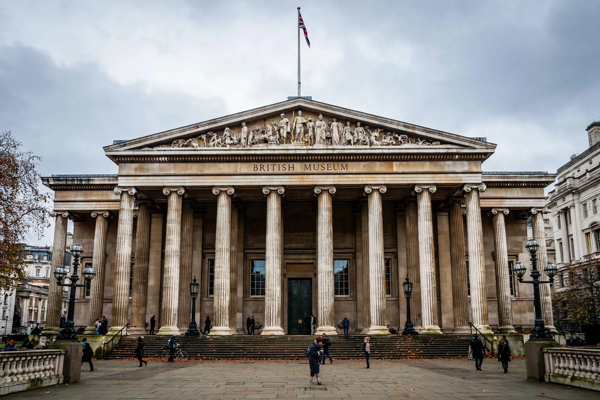

British Museum
From Wikipedia, the free encyclopedia
| British Museum | |
|---|---|
 | |
| Established | 1753; opened to the public 15 January 1759 |
| Location | Great Russell Street, Bloomsbury, London |
| Collection size | ~8 million objects |
| Founder | Based on the collection of Sir Hans Sloane |
| Admission | Free |
The British Museum is a public museum in the Bloomsbury area of London, dedicated to human history, art and culture. Its permanent collection of eight million works is the largest in the world. It documents the story of human culture from its beginnings to the present and was the first public national museum to cover all fields of knowledge.
History
The museum was founded in 1753, largely on the collections of the Anglo-Irish physician and scientist Sir Hans Sloane, which Parliament acquired for the nation by lottery-funded purchase. It opened in 1759 at Montagu House, on the site of the current building. The present neoclassical building, designed by Sir Robert Smirke with its iconic Greek Revival portico, was constructed from the 1820s. The round Reading Room opened in 1857; the Queen Elizabeth II Great Court, with its tessellated glass roof designed by Foster and Partners, opened in 2000 around it.
Collection highlights
Famous holdings include the Rosetta Stone, the Parthenon sculptures (Elgin Marbles), the Sutton Hoo ship burial treasures, the Lewis chessmen, Egyptian mummies and the Book of the Dead of Ani, Assyrian palace reliefs, the Hoa Hakananai'a moai from Easter Island, and extensive collections of prints and drawings. The museum's ownership of objects removed during the colonial era — notably the Parthenon sculptures claimed by Greece and the Benin Bronzes claimed by Nigeria — is the subject of continuing repatriation debates.
Departments
Curatorial departments cover Africa, Oceania and the Americas; Ancient Egypt and Sudan; Asia; Britain, Europe and prehistory; Greece and Rome; the Middle East; and coins and medals, among others. The museum receives several million visitors a year and is among the most visited museums in the world. See also other national museums and world heritage architecture.